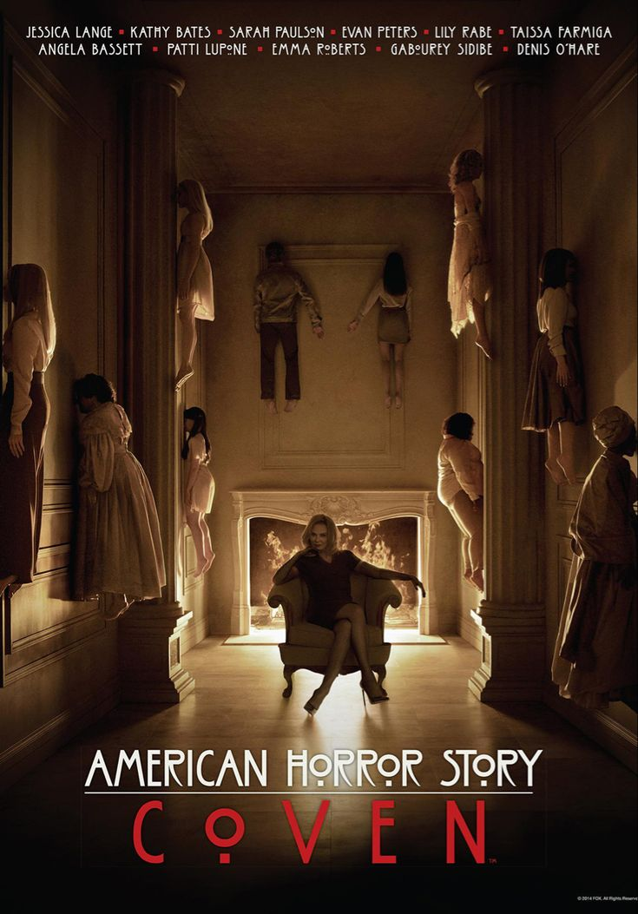

Just like the movie list, I have five horror shows that are the best to watch for October or whenever. Although not every show is on here, there will be enough variation from diffrent countries.
| Show Name | Ranking | Descprtion | ||
|---|---|---|---|---|
| The Twilight Zone(1959) | 5 | Let's start with a classic, this show has been on the air since your grandparents days.This show became the starting for many anthology shows. Each story catered to diffrent viewers of the show.My favorite episode is called 'The Masks' | ||
| All of Us Are Dead(2022) | 4 | Based on a Webtoon(online comic), this show is about what happens when bullying gets too far. In South Korea, it's not surpsing how much bullying gets unnotice. There are not many characters to root for in this show, but it is very intrsting. | ||
| The Fall of the House of Usher | 3 | |
Are you a fan of dark novels? Do you like Edgar Allen Poe? Then this show is for you. The fall of the House of Usher is a show about making a wish with the devil, they always collect. Each of the episodes are name after Poe's short stories. | |
| Another(2012) | 2 | |
Someone is dead, but who? This Japanese anime deals with mystery, thriller and horror. Trying to figure out who is dead in class 3. People will have a good time figure out who is dead and also enjoy the many kills there are. | |
| American Horror Story | 1 |  | This show is one of the most iconic in pop culture. There has never been a show that has the largest fanbase, resulting in which season is better and who is your favorite character. |